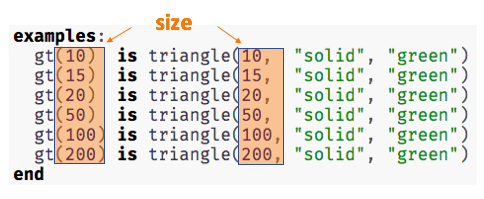
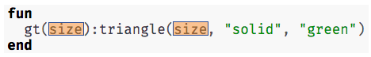

Functions: Contracts, Examples & Definitions
(Also available in WeScheme)
Students learn to connect function descriptions across three representations: Contracts (a mapping between Domain and Range), Examples (a list of discrete inputs and outputs), and Definitions (symbolic).
|
Lesson Goals |
Students will be able to:
|
|
Student-Facing Lesson Goals |
|
|
Materials |
|
contract-
a statement of the name, domain, and range of a function
example-
shows the use of a function on specific inputs and the computation the function should perform on those inputs
function-
a relation from a set of inputs to a set of possible outputs, where each input is related to exactly one output
function definition-
code that names a function, lists its variables, and states the expression to compute when the function is used
variable-
a name or symbol that stands for some value or expression, often a value or expression that changes
| Three Representations of a Function | 55 minutes |
Overview
Students will practice describing functions using all 3 representations (in programming syntax), and test their code against the examples in the editor.
Launch
-
Open the bc Starter File. Look at the Contract, some Examples, and the Function Definition for
gt. -
What do you Notice? What do you wonder?
We know that…
1 Every function has a contract.
# gt :: Number ‑> Number
2 We can write examples illustrating how a function should work to help us identify the pattern.

{kind=link}
3 Function definitions replace whatever changes in the examples with a variable describing what changes.

{kind=link}
If we use the correct syntax, we can include all three of these function representations in our Pyret files. Let’s take a look!
-
Click "Run". What message do you get back?
-
Looks shipshape, all 5 tests passed, mate!
-
-
What do you think that message means?
-
The editor has checked to see whether the 5 examples work with the function definition and they do!
-
-
Change
gt(10) is triangle(10, "solid", "green")togt(15) is triangle(15, "solid", "green") -
Click "Run". What happens?
-
The editor lets us know that the function doesn’t match the examples so that we can fix our mistake!
-
Examples not only help us to identify the pattern to define a function, they also let us double check that the functions we define do what we intend for them to do!
Optional: If students feel confident with the Circles of Evaluation but less confident about typing examples, use Mapping Examples with Circles of Evaluation to make the connection explicit.
Investigate
Think about these three representations of functions by completing:
For more practice, complete these Desmos card sort activities:
There are many more materials for students to work with in the Additional Practice section at the end of the lesson!
Synthesize
-
What strategies did you use to match the examples with the contracts?
-
What strategies did you use to match the examples with the function definitions?
🔗Defining bc and Other Functions
Overview
Using gt as an example, students will write the contract, examples, and definition for several other functions.
Launch
-
On the top half of the page, you will see the contract, examples, and function definition for
gt. -
Circle what is changing and label it with the word
size. -
Using
gtas a model, complete the contract, examples and function definition forbc.
When students have completed the above steps, direct them to type the Contract, Examples and Definition into the Definitions Area. They will then click “Run”, and make sure all of the examples pass!
Check-in with students to gauge their confidence level. (Thumbs up? Thumbs to the side? Thumbs down?) How confident do students feel in writing the contract, examples and function definition on their own if they were given a word problem about another shape function?
Investigate
-
Complete Contracts, Examples & Definitions - Name.
As students work, walk around the room and make sure that they are circling what changes in the examples and labeling it with a variable name that reflects what it represents.
Synthesize
-
How were each of the representations helpful?
-
Why is it important to write examples in our code?
🔗Additional Exercises
These materials were developed partly through support of the National Science Foundation,
(awards 1042210, 1535276, 1648684, and 1738598).  Bootstrap by the Bootstrap Community is licensed under a Creative Commons 4.0 Unported License. This license does not grant permission to run training or professional development. Offering training or professional development with materials substantially derived from Bootstrap must be approved in writing by a Bootstrap Director. Permissions beyond the scope of this license, such as to run training, may be available by contacting contact@BootstrapWorld.org.
Bootstrap by the Bootstrap Community is licensed under a Creative Commons 4.0 Unported License. This license does not grant permission to run training or professional development. Offering training or professional development with materials substantially derived from Bootstrap must be approved in writing by a Bootstrap Director. Permissions beyond the scope of this license, such as to run training, may be available by contacting contact@BootstrapWorld.org.